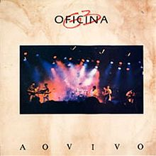
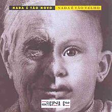
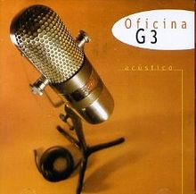
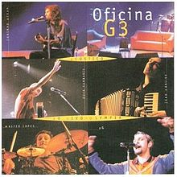
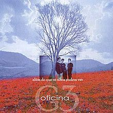
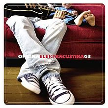
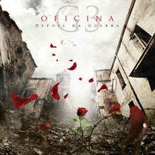
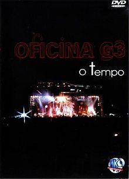
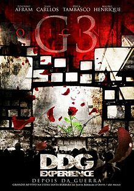
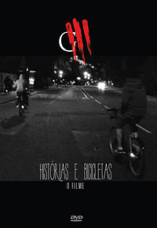

Integrantes


Oficina G3 é uma banda brasileira de rock, com temáticas cristãs, formada na cidade de São Paulo em 1987. Fundada por Juninho Afram, Wagner García, Walter Lopes e Tulio Regis, no fim da década de 1980, passou por vários subgêneros do rock e formações. Além de Juninho, Duca Tambasco e Jean Carllos são os membros mais antigos e participaram de praticamente todos os discos produzidos pelo conjunto. A banda já venceu e foi indicada, por várias vezes, em premiações como os troféus Talento, Promessas e Grammy Latino, por suas produções.
Na época em que o conjunto começou, o rock ainda tinha forte resistência em igrejas cristãs brasileiras, mesmo com certas bandas no início da década de 1980, como o Rebanhão, a se destacar no mainstream da cena religiosa. A partir da década de 1990, juntamente com as bandas Catedral, Resgate, Katsbarnea e Fruto Sagrado, Oficina G3 se tornou ícone do incipiente gênero do rock cristão brasileiro, tornando-se conhecida entre os admiradores desse estilo no país. Apesar de, em parte, seus integrantes terem sido rejeitados por muitos pastores e lideranças religiosas, o visual da banda, com integrantes tatuados e de cabelos compridos, em geral sempre atraiu o público jovem adepto à religião.
Em 1997, o vocalista Luciano Manga deixa a banda e entra, em seu lugar, PG. Nesta época, parte do apelo de "banda de rock pesado" foi deixado de lado e o grupo passou a ter um estilo mais guiado pelo pop rock. Foi a fase de sua maior popularidade, principalmente após a assinatura com a gravadora MK Music. Após a saída do cantor em 2003, o Oficina G3 voltou a ter como estilo predominante outras variações do rock, mais especificamente o progressivo. No álbum Além do que os Olhos Podem Ver, os vocais foram assumidos pelo guitarrista Juninho Afram. Com a obra, a banda vendeu vinte e mil cópias em três dias, alcançando disco de ouro posteriormente. Em 2008 o grupo lançou Depois da Guerra, o primeiro de Mauro Henrique como novo vocalista. O álbum venceu o Grammy Latino de Melhor Álbum de Música Cristã em Língua Portuguesa em 2009. Histórias e Bicicletas (Reflexões, Encontros e Esperança), de 2013, é o trabalho mais recente de sua discografia.
É atualmente composta por quatro integrantes: Juninho Afram (vocal e guitarra), o qual é o líder e único integrante da formação original, Duca Tambasco (baixo e vocal), Jean Carllos (teclado e vocal) e Mauro Henrique (vocal e violão). Os músicos são reconhecidos por suas proficiências em seus instrumentos,estando frequentemente presentes em matérias de revistas especializadas em música.
A banda teve início na década de 1980, uma época marcada pelo surgimento de várias bandas de rock cristão no Brasil, intensificado pelo movimento gospel, que difundiu o gênero pelo país. Nessa época surgiram na música cristã brasileira inúmeras bandas de rock cristão, sendo que os grupos Resgate, Fruto Sagrado, Katsbarnea, Livre Arbítrio, Metal Nobre, Catedral, Stauros e o Oficina G3 foram as únicas que alcançaram notoriedade nacional durante a época. Em 1987, na Igreja Cristo Salva, em São Paulo, Juninho Afram, Walter Lopes, Wagner García e Tulio Regis, frequentadores do local, juntaram-se e formaram um grupo musical, a fim de suprir a necessidade de mais músicos naquela congregação. Eles formaram assim o grupo 3 daquela igreja. Somaram-se a eles subsequentemente Luciano Manga, além dos músicos convidados James Conway - "Grande Jimmy" na guitarra, e Márcio Woody de Carvalho no teclado.
Como o grupo não tinha nome ainda na época, decidiram chamá-lo pela sigla G3, abreviatura de Grupo 3 (pelo fato de que eram o terceiro grupo de louvor da Igreja Cristo Salva). Mais tarde, resolveram mudar de nome e escolheram Oficina. Por essa época, a banda se inscreveu num concurso de talentos cristãos sob o nome Oficina G3, nome provisoriamente adotado. Esse nome, segundo Luciano Manga, foi adotado no final dos anos 1980, por uma sugestão de um amigo dos integrantes da banda. Na ocasião, o grupo participaria em um evento chamado Terça Gospel, no Dama Shock, e este amigo era dono de uma agência de publicidade, e achava que este nome seria chamativo.
Posteriormente os membros da banda passaram a frequentar a Igreja Metodista de Santo Amaro e tocar na Renascer em Cristo onde foram contratados pela Gospel Records. Por esse tempo o grupo ganhou alguma notoriedade pelo seu estilo hard rock, que era algo raro no meio da música cristã brasileira. Nessa época a banda já se apresentava no Dama Shock, em São Paulo, junto a outras bandas, onde ganharam uma certa relevância.
Duca Tambasco ingressou no Oficina G3 em 1994, após a saída de Maradona.
Em 1990 o grupo lançou um LP ao vivo, gravado em uma apresentação na casa de eventos Dama Shock. Por essa época já havia sido adotado o nome oficial do conjunto.Passado algum tempo, alguns integrantes da banda a deixaram, nomeadamente o baixista Wagner García e o vocalista e letrista da banda Túlio Régis, entrando Duca Tambasco e ficando com apenas um vocalista. Segundo Túlio, sua saída foi provocada por problemas pessoais, e com o grupo.
Em 1993, a banda gravou Nada É Tão Novo, Nada É Tão Velho. Lentamente começam a se tornar conhecidos no Brasil, atraindo um considerável número de fãs e admiradores pelo país. Como não era muito comum haver bandas cristãs de rock no início da década de 1990, algumas vezes a banda era discriminada por lideranças religiosas, algumas alegando que sua música era satânica. O visual da banda, marcado por tatuagens, piercings e cabelos compridos contribuía para esse efeito, mas o mesmo visual representava um atrativo para a sua audiência, tanto cristã quanto secular.
A terceira gravação, intitulada Indiferença, somente aconteceu em 1996, ano que também marcou a entrada Jean Carllos no grupo. O trabalho foi produzido por Paulo Anhaia, que trabalhou, anteriormente, em On the Rock do Resgate. A obra mostrou o virtuosismo da banda, com duas faixas dedicadas a solos de guitarra e uma outra a um solo de baixo. Um dos solos de guitarra era um prelúdio instrumental à canção "Glória" (versão rock em português do hino The Battle Hymn of the Republic), que por muito tempo foi uma das músicas mais tocadas em suas apresentações.Neste álbum, Juninho Afram tornou-se o compositor majoritário do grupo, e participou, com mais frequência dos vocais.
Indiferença foi muito bem recebido, consolidando e tornando a banda ainda mais popular e bem avaliada. O disco é considerado por muitos o melhor álbum da banda até hoje e representou o auge do Oficina G3 na fase inicial do grupo,e também o fim dela, já que, após esse álbum, Luciano Manga necessitou deixar o grupo porque era pastor. Por conta do fato, Manga e os membros do Oficina G3 escolheram PG, que era membro da igreja ao qual faziam parte para assumir a posição de vocalista do conjunto. PG era baixista e vocalista de uma banda de metal chamada Corsário, e, mais tarde, aceitou entrar no grupo.
Assim que PG ingressou, Luciano Manga se retirou da banda. A partir daí o conjunto decidiu gravar trabalhos acústicos, comemorando dez anos de carreira.
Com a entrada do novo vocalista, a banda grava em 1998 o álbum Acústico, com duas canções inéditas e regravações, uma delas escrita por PG, e outra por Juninho Afram. Um ano depois, lançou o Acústico ao Vivo, este alcançando a marca de mais de cem mil cópias vendidas, contendo as mesmas faixas do projeto de estúdio, além de outras regravações.
Segundo Túlio Regis, a posterior entrada do Oficina G3 no cast da gravadora MK Music coincidiu com a saída da banda de pop rock Catedral da mesma. Ao mesmo tempo, tal saída do grupo da Gospel Records causou insatisfação com esta, isto porque o Oficina G3 era quem mais vendia ali. E, por um contrato artístico repressivo, o grupo permanecia, até que Túlio ajudou na contratação com a MK.
O grupo então assinou contrato com a gravadora em 1999, saindo da Gospel Records e perdendo os direitos autorais de todas as músicas, e no ano de 2000 lançou o álbum O Tempo. O disco tornou-se um grande sucesso comercial, e esse sucesso chegou a chamar a atenção até mesmo das mídias não-religiosas, com vídeos musicais da banda sendo apresentados no canal Multishow e na MTV Brasil. O Tempo contou com a produção musical de Geraldo Penna, que começou a trabalhar com o Oficina G3 nos trabalhos acústicos. O álbum superou a marca das 170 mil cópias vendidas.
A Bíblia já diz em Eclesiastes 3: 1-8 “que pra tudo tem um tempo determinado”, e esse essencialmente é o principal motivo. Houve alguns problemas pessoais que se completaram com desencontros de idéias e princípios que divergiam da banda, o que culminou na minha saída.-Walter Lopes, sobre sua saída da banda.
Em 2001, o grupo foi o único de música cristã (além de Os Nazaritos) a participar do Rock in Rio 3, e neste evento lançou o DVD O Tempo. No ínterim entre O Tempo e a obra posterior, o baterista Walter Lopes deixou a banda por motivos pessoais, entrando em seu lugar o irmão de PG, Johnny Mazza, como freelancer que permaneceu até o final de março de 2003. Após a saída de Johnny Mazza, Lufe, assume a bateria da banda, mas também não como integrante oficial.
No final de dezembro de 2002, o quarteto lançou Humanos, álbum que seguiu, parcialmente, a tendência pop rock, mesmo tendo uma sensível diferença no estilo. O uso de riffs e solos de guitarras mais marcantes, e a presença muito maior de distorções do que no álbum passado, contudo sem representar uma volta ao estilo hard rock, aproximando-se muito mais ao nu metal - que era uma das tendências daquele momento - de bandas como Linkin Park e P.O.D.. O álbum recebeu várias avaliações negativas da crítica especializada, por sua inconsistência sonora, considerado, por muitos, como o pior álbum do Oficina G3.
Em setembro de 2003, PG também decidiu sair da banda para se dedicar à carreira pastoral. Entretanto, a notícia só foi divulgada dois meses depois. Segundo PG, a saída da banda foi pacífica, entretanto não foi o mesmo dito pelos integrantes do Oficina G3. Duca Tambasco, por exemplo, declarou: "A gente ficou sabendo através de um comunicado". Por outro lado, o ex-integrante afirmou que suas atividades como pastor não recebiam aprovação total dos demais membros, e optou por seguir sozinho. Por conta de tais mudanças na estrutura interna da banda, Juninho Afram assumiu a posição de vocalista enquanto o conjunto procurava um novo membro.
A saída de PG provocou uma sensação de insatisfação nos músicos remanescentes. Com críticas e um encontro conturbado na sede da gravadora, a relação entre Afram, Tambasco e Carllos com PG ficou frágil. Com sua saída, os membros retomaram a produção de um próximo disco, o qual começaram a desabafar acerca do ocorrido, mas optaram por mudar o direcionamento conceitual da obra.
Caracterizado como um álbum conceitual que critica a hiprocrisia religiosa, a banda contou com a participação de Déio Tambasco em algumas guitarras do projeto, e na base, durante a turnê. O cantor Marcão participou nos vocais em algumas faixas, e Lufe ficou responsável pela bateria. Sonoramente, o disco sofreu uma mudança na tendência dos anteriores, com a diminuição de baladas e uma musicalidade voltada à vertentes progressivas do rock, com vários contratempos e distorções. Além do que os Olhos Podem Ver levou mais de um ano para ser lançado, mas obteve bons desempenhos comerciais e críticos, caracterizando o Oficina G3 mais distante do pop rock, chegando a vender vinte mil cópias em apenas três dias e a ganhar um disco de ouro no período de um mês, além de ter sido indicado ao Grammy Latino, na categoria Melhor Álbum de Música Cristã em Língua Portuguesa. Ter lançado um projeto de sonoridade mais "pesada" fez aumentar as especulações de que PG teria sido o responsável pelo direcionamento musical que a banda tinha, mas Juninho Afram entrou em defesa do ex-integrante, afirmando que "não houve "um" culpado para as mudanças sonoras, as coisas foram simplesmente acontecendo".
Após a turnê de Além do que os Olhos Podem Ver, Déio Tambasco retornou à banda Katsbarnea, que estava sendo reformulada, e Lufe deixou de tocar com o grupo em novembro de 2006. Por conta da saída dos dois músicos contratados, a banda convidou Alexandre Aposan e Celso Machado para assumirem suas respectivas funções. Nesta formação, a banda entrou em estúdio para gravar um álbum comemorativo dos seus vinte anos de carreira. O projeto, denominado Elektracustika, trouxe, em seu repertório, regravações repaginadas de músicas mais antigas ao lado de algumas canções inéditas. A proposta do trabalho era de criar uma sonoridade rica e criativa, explorando o formato acústico com suas trivialidades e limitações. As canções mostraram uma oscilação entre o vigor dos instrumentos elétricos e o clima intimista do formato acústico, sendo mais abrangente em relação ao público se comparado com a obra anterior, já que não limitou os ouvintes àqueles que gostam de rock mais "pesado". Apesar de não ter sido um proposta musical inédita para outros grupos, representou uma novidade no estilo da banda, com arranjos, ao olhar da mídia especializada, bastante trabalhados se comparado à maioria dos trabalhos acústicos. O trabalho, apesar de incompreendido pelo público, chegou a concorrer ao Grammy Latino no ano de 2007. Contendo também uma presença maior de Jean Carllos e Duca Tambasco nos vocais, a banda fez uma pequena turnê nos Estados Unidos, e anunciou, por ocasião do aniversário de vinte anos de carreira, o lançamento de um DVD comemorativo, porém poucos detalhes foram dados a respeito.
Muita gente não entendeu a proposta do Elektracustika, que era uma fase, um momento, como se de 10 em 10 anos fossemos fazer algo diferente. E muita gente achou que tivéssemos mudado o estilo, e muita gente ficou até decepcionada.Voltar ao Topo
—Duca Tambasco sobre a recepção de Eletracustika.
Posteriormente, a banda anunciou oficialmente a entrada de um novo vocalista chamado Mauro Henrique. Este já estava há um tempo convivendo com a banda, inclusive fazendo participações especiais em shows. A banda já estava trabalhando em seu novo álbum, Depois da Guerra, lançado em dezembro de 2008. O mesmo estava sendo produzido totalmente para as linhas vocais de Juninho Afram; nesse ínterim a entrada de Mauro Henrique foi anunciada, e o CD sofreu algumas mudanças para ser adaptado à sua voz, além de novas faixas e mudança na ordem das músicas.
Duca Tambasco, na época, afirmou, em entrevistas, que o álbum seguiria a proposta progressiva de Além do que os Olhos Podem Ver, porém com mais influências do metal. D.D.G. foi produzido por Marcello Pompeu e Heros Trench, integrantes da banda Korzus, os quais o baixista elogiou: "Se a gente tinha uma linguagem em 180 graus eles expandiram em 360, pra todos os lados que se possa imaginar: em rock, peso, linguagem, ritmos. E foi muito legal trabalhar com eles. O profissionalismo dos caras tem sido muito bacana". Liricamente, o álbum foi definido por Tambasco como, em grande maioria, das guerras em geral vividas por cristãos, seja em conflitos com outras pessoas que causam divisões, quanto em guerras pessoais, com a rotina e o dia a dia. Gravação do D.D.G. Experience, em julho de 2009.
A recepção da crítica especializada foi a mesma para Além do que os Olhos Podem Ver, sendo recebido com maior entusiasmo por parte do público através da estreia de Mauro nos vocais. A banda gravou o clipe da canção "Incondicional" em maio de 2009, com direção de vídeo de Hugo Pessoa. A produção, na época, foi lançada em 35mm digital HD, e alcançou milhões de visualizações no YouTube.Tempos depois, o álbum foi premiado no Grammy Latino, na categoria Melhor álbum cristão em Língua Portuguesa, e recebeu comentários positivos do público em geral, tanto cristão quanto não-religioso.
Nos dias 25 e 26 de julho de 2009, o Oficina G3 realizou, na cidade de Santa Bárbara d'Oeste a gravação do DVD D.D.G. Experience, com base na temática e no disco Depois da Guerra, lançado anteriormente. Gravado numa usina abandonada, foi dirigido por Hugo Pessoa. A produção também contou com o efeito bullet-time. Além do repertório de Depois da Guerra, a gravação trouxe algumas canções do álbum Além do que os Olhos Podem Ver.
Em 2011, a banda encerra a turnê DDG e anuncia a YourTourG3. O repertório, dessa vez, foi escolhido pelo público através da internet e consequentemente trouxe várias canções da banda, incluindo antigas. Tal escolha foi elogiada mas também criticada por muitos. Em agosto, o grupo foi indicado em algumas categorias do Troféu Promessas: Melhor DVD, a qual foi finalista e Melhor Banda, também finalista. Neste mesmo ano, em 16 de agosto, o Oficina G3 anunciou, oficialmente, a entrada de Alexandre Aposan como baterista do conjunto.
Em agosto de 2012, a banda foi para Londres, onde iniciou as gravações de mais um trabalho, sendo auxiliado por Leonardo Gonçalves e tendo a produção dos cinco integrantes do conjunto. O projeto foi lançado em abril de 2013, e teve por título Histórias e Bicicletas (Reflexões, Encontros e Esperança).O projeto foi dedicado à ex-esposa de Mauro Henrique, Jaky Dantas, que morreu de câncer meses antes da gravação. O álbum foi destacado pela banda como um disco gerado após várias histórias positivas e negativas que o grupo tinha vivido ao longo dos últimos anos.Nesta época, também, Duca Tambasco e Jean Carllos se divorciaram de suas esposas. Portanto, o projeto, assim, foi considerado mais reflexivo e triste do que os anteriores. A sonoridade manteve as tendências progressivas dos projetos antecedentes, porém, com mais influências do metal alternativo.Em 2014, o álbum recebeu disco de ouro pela ABPD, por mais de quarenta mil cópias vendidas.
No início de 2014, a banda apresentou o G3 na Igreja, um projeto em que o grupo faria apresentações especiais em templos religiosos. Para a divulgação da iniciativa, o grupo gravou um evento na Primeira Igreja Batista de São Paulo, e divulgou, em seu canal no YouTube, videoclipes das canções "Encontro" e "Aos Pés da Cruz", dirigidas por Douglas Sciola.
Em julho do mesmo ano, o baterista Alexandre Aposan anunciou sua saída do grupo, alegando que contratos da banda impediam que o músico seguisse como integrante oficial e ao mesmo tempo pudesse gravar discos com outros artistas.A banda lançou um comunicado agradecendo o músico e, desde então, o Oficina G3 não definiu oficialmente nenhum baterista em seu lugar.Após isso, o grupo passou a atuar com o baterista contratado Maick Souza, no mesmo processo realizado com Lufe e o ex-integrante Aposan, antes de ser efetivado.
Em abril de 2015, a banda lançou o filme Histórias e Bicicletas, com direção de vídeo de Hugo Pessoa e participação de Leonardo Gonçalves. O material conteve filmagens da gravação do álbum, com depoimentos dos integrantes do grupo, o clipe inédito de "Água Viva" e outras canções do álbum Histórias e Bicicletas (Reflexões, Encontros e Esperança).Paralelamente ao G3 na Igreja, a banda passou a produzir o DNA G3, um formato de show que trouxe músicas de todos os álbuns da banda e também workshops dos integrantes.O vocalista Mauro Henrique, ainda, passou a se apresentar por meio da turnê Loop Session + Friends, ao lado dos cantores Leonardo Gonçalves e Guilherme de Sá.
Em setembro de 2016, a banda anunciou a produção de seu primeiro EP e, no dia 29 do mesmo mês, lançou o single "Tudo É Vaidade" nas plataformas digitais. O videoclipe, liberado no canal da Oficina G3, foi dirigido por Jr. Finnis e gravado durante shows nas cidades de Curitiba e Maringá.Com o lançamento, feito de forma independente, o vocalista Mauro Henrique anunciou que a banda encerrou contrato com a gravadora MK Music, após cerca de 17 anos de relacionamento com a empresa carioca.
No mês seguinte, o grupo divulgou mais um single, chamado "João", por meio de um lyric video produzido por Nilton Fernandes. A música, de composição dos quatro integrantes, foi liberada com exclusividade na Deezer e, mais tarde, nas demais plataformas digitais de música de forma independente. Em fevereiro de 2017, o grupo disponibilizou a música "Retrato".
| Imagem | Nome | Data Nascimento | Instrumento |
|---|---|---|---|
|
Juninho Afram | Vocal, Guitarra, Violão | |
|
Duca Tambasco | Baixo, Vocal de apoio | |
|
Jean Carlos | Vocal, Teclado, Piano | |
|
Mauro Henrique | Vocal, Violão |
| Capa | Nome | Ano de Lançamento |
|---|---|---|
|  | Ao Vivo | 1990 |
|  | Nada é Tão Novo e Nada é Tão Velho | 1993 |
 |
Indiferença | 1996 |
|  | Acústico | 1998 |
|  | Acústico - Ao vivo | 1999 |
 |
O Tempo | 2000 |
 |
Humanos | 2002 |
|  | Além do que os olhos podem ver | 2005 |
|  | Elektracustika | 2007 |
|  | Depois da Guerra | 2008 |
| Histórias e Bicibletas | 2013 |
| DVD | Título | Ano Lançamento |
|---|---|---|
 |
Acústico Ao Vivo - DVD | 1999 |
|  | O Tempo - DVD | 2001 |
|  | D.D.G. Experience | 2010 |
|  | Histórias e Bicicletas - DVD | 2015 |
A banda possui influências diversas, as quais podem ser notadas com maior ou menor intensidade em seus álbuns, que refletem cada um dos diferentes gêneros musicais pelos quais passou. Nota-se, por exemplo, a influência das bandas de rock norte-americanas Bride, Stryper (influências especialmente notórias nos primeiros álbuns, em especial pelo estilo glam rock das canções, e da aparência dos integrantes), Petra, Newsboys, DC Talk (cujo integrante Kevin Max já cantou com o Oficina G3, na ocasião de um concerto em junho de 2003, em São Paulo), P.O.D. Além das bandas de música cristã, pode-se incluir entre as influências a banda Deep Purple, e os músicos Yngwie Malmsteen, Oscar Peterson, Charlie Parker, Bach, Chopin, Tom Jobim e ainda Laurens Hammond.
A banda já passou principalmente por três fases: hard rock (primeiros três álbuns, com o vocalista Manga), pop rock (próximos 4 álbuns, com o vocalista PG), e metal progressivo (últimos três álbuns de inéditas, um de Juninho Afram como vocalista, e os dois últimos com Mauro Henrique).[16] Apesar de terem esses três estilos bem definidos em suas respectivas fases, também exploraram outros gêneros musicais durante sua história. Entre os estilos que os influenciaram estão o power metal, heavy metal, nu metal, metalcore, thrash metal, glam rock, metal neoclássico, música instrumental, música erudita, música experimental, e a MPB.
A banda também influenciou outros músicos e personalidades. Mara Maravilha, antes de tornar-se evangélica, regravou a canção "Naves Imperiais" - composta por Túlio Régis e presente no álbum Ao Vivo - em seu disco, Curumim, de 1991.No DVD Vem, esta é a hora - Ao Vivo do grupo Vineyard Music Brasil gravado em 2008, Juninho Afram participa da canção "Quebrantado" ao lado de Luciano Manga.Várias outros músicos cristãos declaram que costumam ouvir o Oficina G3: Luiz Arcanjo, vocalista do Trazendo a Arca;Marco Antônio, ex-vocalista do Fruto Sagrado;Dudu Borges, produtor musical notório no sertanejo universitário,entre outros.
Voltar ao Topo
Desenvolvimento: Hudson Alves Faculdades Promove Design Interface Web